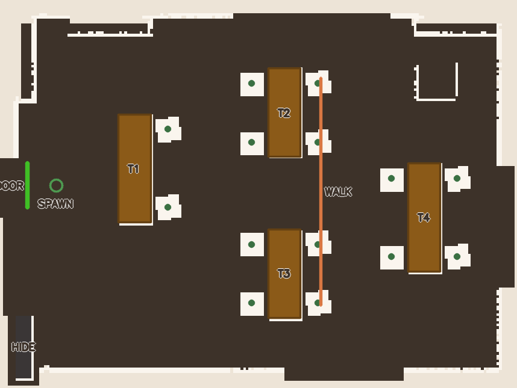

매장 지도
● 로봇 위치 ⚑ 이동 목표
로봇 위치 수신 대기 중…
전방 카메라
YOLO 사람 감지 (/yolo/detected_image)영상 수신 대기 중… (yolo_detector 실행 필요)
로봇에게 말하기
예: “T2로 가줘” · “hideout으로 이동” · “랜덤이동 해” · “지금 어디야?” · “앞에 뭐가 보여?” · “멈춰”2026 AMR 교실 시뮬 Storagy입니다. 🤖
T1~T4·hideout·진입문으로 이동하거나, 배회·카메라 확인을 말씀해 주세요.
(P1 FSM 테스트: takeover/mission_done은 터미널 topic pub)
T1~T4·hideout·진입문으로 이동하거나, 배회·카메라 확인을 말씀해 주세요.
(P1 FSM 테스트: takeover/mission_done은 터미널 topic pub)
이벤트 로그
Nav2 목표 · T1~T4 · hideout · 배회 · 취소아직 기록된 이벤트가 없습니다.